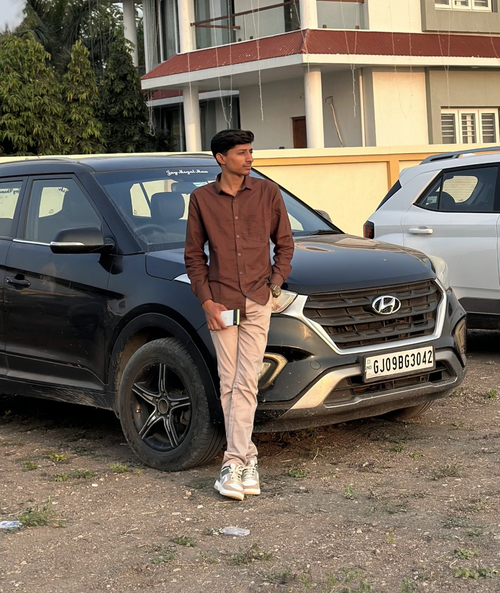

OFFICIAL WEBSITE
Vikram Odedara
Cricket enthusiast, digital project creator and sports-focused individual from Porbandar, Gujarat, India.

About Vikram Odedara
Official information and interests
Vikram Odedara is from Porbandar, Gujarat, India. His interests include cricket and cricket tournaments, horse racing and horse training, local events and activities, and technology and digital projects.
This website provides information about Vikram Odedara, his projects, cricket-related activities and official online profiles.
Interests & Activities
Areas associated with Vikram Odedara
🏏 Cricket
Cricket, player auctions, tournaments and cricket-related activities in Porbandar.
🐎 Horse Racing & Training
Interest in horses, horse racing and horse training.
💻 Technology
Technology, websites, digital projects and online platforms.
🏆 Tournaments
Cricket tournaments and sports activities in the Porbandar area.
📍 Porbandar
Local activities, events and projects connected with Porbandar, Gujarat.
🚀 Digital Projects
Building and developing online ideas and digital platforms.
Porbandar Auction Cricket
Cricket player auction platform project
🏏 Online Cricket Auction
Porbandar Auction Cricket is a digital project focused on online cricket player auctions and live player bidding.
The platform is designed for cricket tournaments where teams can participate in player auctions using virtual auction points.
Cricket Auction Live Bidding Virtual Points Cricket Tournament⚡ How It Works
Tournament organizers can set up teams, add players, assign virtual auction points and conduct player auctions.
Team owners can participate in live bidding and use their virtual points to purchase players during the auction.
The auction points described on this website are virtual tournament points and are not real-money betting credits.
Projects
Digital and sports-related work
Porbandar Auction Cricket
An online cricket player auction project designed around live bidding and virtual tournament points.
Digital & Technology Projects
Websites and digital ideas focused on creating useful online experiences.
Cricket Tournament Activities
Cricket tournament activities and player-auction related work connected with Porbandar.
Frequently Asked Questions
Common information about Vikram Odedara
Who is Vikram Odedara?
Vikram Odedara is associated with cricket, cricket tournaments, horse racing and training, technology and digital projects in Porbandar, Gujarat, India.
Where is Vikram Odedara from?
Vikram Odedara is from Porbandar, Gujarat, India.
What is Porbandar Auction Cricket?
Porbandar Auction Cricket is a digital cricket player-auction project focused on live player bidding using virtual tournament points.
Is Porbandar Auction Cricket a betting platform?
No. The auction model described on this website uses virtual tournament points for cricket player bidding. These points are not presented as real-money betting credits.
What sports activities is Vikram interested in?
Cricket and cricket tournaments are among his interests, along with horse racing and horse training.
Where can I find Vikram Odedara online?
Official social media profiles are available in the links below.
Official Online Profiles
Follow Vikram Odedara online